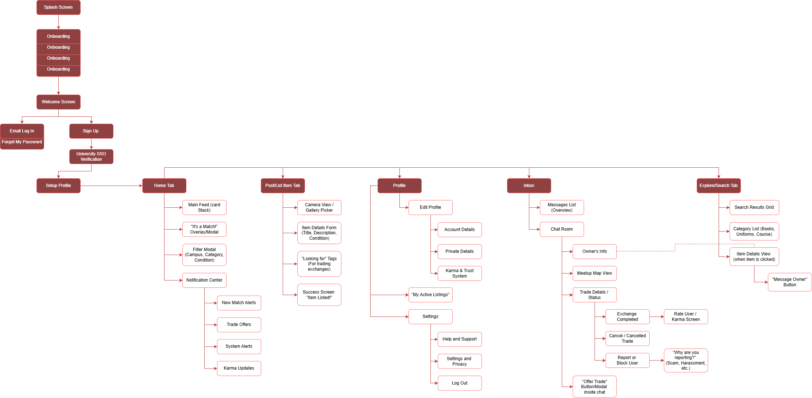
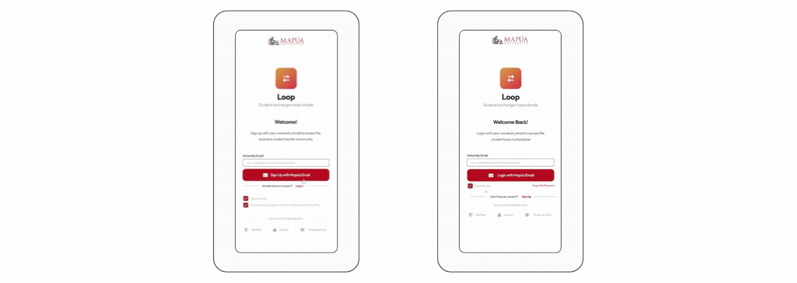
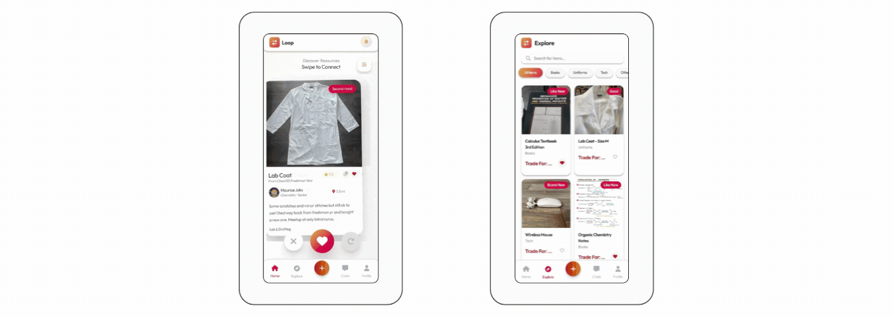
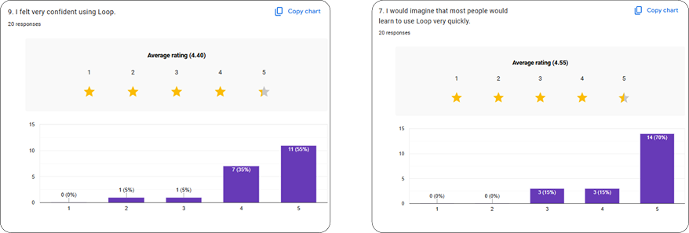

Loop - UI/UX, HCI, Mobile App
Loop
A gamified peer-to-peer campus barter and resource exchange platform designed to solve the "resource paradox" among university students through secure, verified trading.

01 The Context: Digitizing a Manual System
[Problem Statement]
University students frequently face a "resource paradox": they own valuable academic materials (textbooks, uniforms, drafting tools) they no longer need, yet lack the financial liquidity to purchase new requirements. Existing solutions like Facebook Marketplace are unstructured, unverified, and lack the campus-specific filters necessary for safe, localized exchanges.
Solution:
Loop is a mobile application prototype that gamifies the circular economy through a secure, institution-exclusive trading interface. By utilizing a "Swipe-to-Trade" mechanic, Loop transforms the tedious task of resource hunting into an engaging, high-trust discovery process.

02 Systems Architecture & UX Strategy
As the Lead Designer, I focused on reducing cognitive load and establishing a zero-trust safety environment.
| HCI Feature | UX Strategic Goal |
|---|---|
| Institutional SSO | Ensures all users are verified students via @mymail.mapua.edu.ph. |
| Swipe-to-Trade UI | Reduces decision fatigue by presenting items in a focused card-stack interface. |
| Smart-Match Algorithm | Identifies "double-coincidence of wants" between users across different campuses. |
| Karma & Trust System | Fosters a self-regulating community through behavioral "Karma Points". |
[Information Architecture]
I designed a structural flow that prioritizes secure onboarding and intuitive item discovery, ensuring students can navigate from login to exchange with minimal friction.

03 UI Design & Visual System
The visual system was designed to be clean and modern, leveraging Mapua's institutional trust while feeling fresh and "Gen-Z" appropriate.
- Gamified Interactions: The "Right Swipe" for interest makes the bartering process feel like a social experience rather than a transaction.
- Safe Exchange Zones: To facilitate secure logistics, the chat interface features integrated maps suggesting common "Safe Exchange Zones" like campus lobbies.
- Operational Efficiency: The "Post Item" form uses quick-select category pills (Books, Uniforms, Tech) to streamline the listing process.
[Design System]

I. Authentication & Security

Sign Up Flow
A secure onboarding process requiring Mapua institutional email verification to establish a zero-trust community.
Recovery System
A streamlined "Forgot Password" workflow ensuring users never lose access to their trade history or Karma status.
II. Discovery & Match Logic

The "Swipe-to-Trade" Home
An intuitive card-stack interface that reduces cognitive load with real-time feedback when two students' resource needs align.
Exploration Hub
A categorized catalog for traditional browsing, filtered by Books, Uniforms, Tech, and more.
III. Management & Logistics

Dynamic Listing Portal
A simplified form with category pills and condition tags for rapid item uploads.
Intelligent Chat Hub
A secure communication interface featuring integrated campus maps to suggest "Safe Exchange Zones".
User Profile & Trust
A centralized view of active listings and "Karma & Trust Points" to foster community accountability.
04 Evaluation & User Research
This project was validated through rigorous HCI testing, focusing on the System Usability Scale (SUS).
- Quantitative Success: The prototype achieved an average SUS score of 84.38, placing it in the "Grade A / Excellent" category.
- User Confidence: 70% of testers strongly agreed they felt confident using the app, and 55% strongly agreed they would like to use the system frequently.
- Learnability: 70% of users felt the system was very easy to learn, validating our goal of reducing cognitive load through the swipe interface.

05 Impact & Reflection
Loop proves that by applying HCI principles like gamification and institutional verification, we can solve complex logistical problems within a campus community.
What I Learned
Balancing security (SSO) with high-speed interaction (Swipe UI) is essential for maintaining user engagement in a peer-to-peer marketplace.
Thank You For Stopping By!
Feel free to leave any thoughts :)
Email: mendozaclaireantonette791@gmail.com
LinkedIn: Claire Antonette Mendoza
Keep Exploring!

Tyche Nails
Data-Driven Salon Management
An end-to-end platform integrating intuitive UI with a predictive analytics dashboard to help salon owners track KPIs.

Project AGOS
Resource Mapping & Workflow
A digital workflow application designed to map vital resources and translate complex user journeys into an accessible interface.

Cocopan Insights
SME Business Intelligence
A comprehensive business intelligence dashboard transforming raw datasets into actionable visualizations.